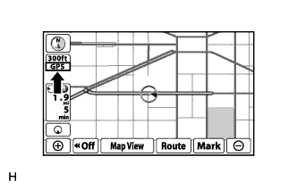
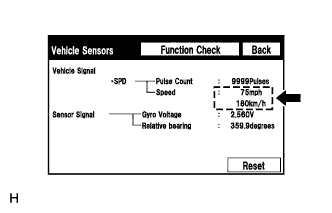
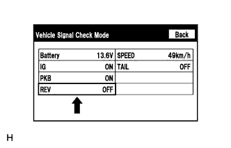

СИСТЕМА НАВИГАЦИИ (для моделей с жестким диском) > Значительное несоответствие метки положения автомобиля на карте фактическому положению |
| 1.ПРОВЕРЬТЕ МЕТКУ GPS |
|  |
Проверьте, отображается ли метка GPS.
|
| ||||
| OK | |
| 2.ПРОВЕРЬТЕ ДАТЧИКИ АВТОМОБИЛЯ (РЕЖИМ ПРОВЕРКИ СИСТЕМЫ НАВИГАЦИИ) |
|  |
Войдите в режим "Navigation Check" (проверка системы навигации) и выберите пункт "Vehicle Sensors" (датчики автомобиля) (Нажмите здесь).
Во время движения автомобиля сравните показания параметра "Speed" (скорость) с показаниями спидометра. Убедитесь в том, что показания совпадают или почти совпадают.
|
| ||||
| OK | |
| 3.ПРОВЕРЬТЕ СИГНАЛЫ АВТОМОБИЛЯ (РЕЖИМ ПРОВЕРКИ СИСТЕМЫ НАВИГАЦИИ) |
|  |
Войдите в режим "Display Check" (проверка дисплея) и выберите пункт "Vehicle Signal Check" (проверка сигналов автомобиля) (Нажмите здесь).
Убедитесь в том, что дисплей меняет состояние между ON (ВКЛ) и OFF (ВЫКЛ) в зависимости от работы рычага переключения передач.
| Положение рычага переключения передач | Дисплей |
| Кроме R | OFF (ВЫКЛ) |
| R | ON (ВКЛ) |
|
| ||||
| OK | ||
| ||